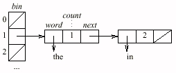

Our first problem is to produce a list of the words contained in a document. (Feed such a program a few hundred books, and you have a fine start at a word list for a dictionary.) But what exactly is a word? We'll use the trivial definition of a sequence of characters surrounded by white space, but this means that web pages will contain many ``words'' like ``<html>'', ``<body>'' and `` ''. Problem 1 asks how you might avoid such problems.
Our first C++ program uses the sets and strings of the Standard Template Library, in a slight modification of the program in Solution 1.1:
int main(void)
{ set S;
set::iterator j;
string t;
while (cin >> t)
S.insert(t);
for (j = S.begin(); j != S.end(); ++j)
cout << *j << "\n";
return 0;
}
Our next problem is to count the number of times
each word occurs in the document.
Here are the 21 most common words in the King James Bible,
sorted in decreasing numeric order
and aligned in three columns to save space:
[Click for more examples of
word frequency counts.]
These counts were produced by the following C++ program,
which uses the Standard Template Library
map to associate an integer count with each string:
This C++ code is straightforward, succinct
and surprisingly fast.
On my machine,
it takes 7.6 seconds to process the Bible.
About 2.4 seconds go to reading,
4.9 seconds to the insertions,
and 0.3 seconds to writing the ouput.
We can reduce the processing time by
building our own hash table,
using nodes that contain a pointer to a word,
a count of how often the word has been seen,
and a pointer to the next node in the table.
Here is the hash table after inserting the strings
``in'', ``the'' and ``in'',
in the unlikely event that both strings hash to 1:
Even by our loose definition of ``word'',
the Bible has only 29,131 distinct words.
We'll follow the old lore of using a prime number
near that for our hash table size,
and the popular multiplier of 31:
The main function initializes every bin to NULL,
reads the word and increments the count of each,
then iterates through the hash table to write
the (unsorted) words and counts:
This C program takes about 2.4 seconds to read its input
(the same as the C++ version),
but only 0.5 seconds for the insertions
(down from 4.9)
and only 0.06 seconds to write the output
(down from 0.3).
The complete run time is 3.0 seconds (down from 7.6),
and the processing time is 0.55 seconds (down from 5.2).
Our custom-made hash table (in 30 lines of C)
is an order of magnitude faster than
the maps from the C++ Standard Template Library.
This little exercise illustrates the two main ways
to represent sets of words.
Balanced search trees operate on strings as
indivisible objects;
these structures are used in most
implementations of the STL's sets and maps.
They always keep the elements in sorted order,
so they can efficiently perform operations such
as finding a predecessor or reporting the elements in order.
Hashing, on the other hand,
peeks inside the characters to compute a hash function,
and then scatters keys across a big table.
It is very fast on the average,
but it does not offer the worst-case performance
guarantees of balanced trees,
or support other operations involving order.
Copyright © 1999
Lucent Technologies. All rights reserved.
Wed 18 Oct 2000
Almost eight percent of the 789,616 words in the text
were the word ``the''
(as opposed to 16 percent of the words in this sentence).
By our definition of word,
``and'' and ``And'' have two separate counts.
the 62053 shall 9756 they 6890
and 38546 he 9506 be 6672
of 34375 unto 8929 is 6595
to 13352 I 8699 with 5949
And 12734 his 8352 not 5840
that 12428 a 7940 all 5238
in 12154 for 7139 thou 4629
The while statement inserts each word t
into the map M and increments the associated counter
(which is initialized to zero at initialization).
The for statement iterates through the words in
sorted order and prints each word
(first) and its count (second).
int main(void)
{ map

We'll implement the hash table with this C structure:
typedef struct node *nodeptr;
typedef struct node {
char *word;
int count;
nodeptr next;
} node;
Our hash function maps a string to a positive integer
less than NHASH:
#define NHASH 29989
#define MULT 31
nodeptr bin[NHASH];
Using unsigned integers ensures that h remains positive.
unsigned int hash(char *p)
unsigned int h = 0
for ( ; *p; p++)
h = MULT * h + *p
return h % NHASH
The work is done by incword, which increments
the count associated with the input word
(and initializes it if it is not already there):
int main(void)
for i = [0, NHASH)
bin[i] = NULL
while scanf("%s", buf) != EOF
incword(buf)
for i = [0, NHASH)
for (p = bin[i]; p != NULL; p = p->next)
print p->word, p->count
return 0
The for loop looks at every node with the
same hash value.
If the word is found,
its count is incremented and the function returns.
If the word is not found,
the function makes a new node,
allocates space and copies the string
(experienced C programmers would use strdup for the task),
and inserts the node at the front of the list.
void incword(char *s)
h = hash(s)
for (p = bin[h]; p != NULL; p = p->next)
if strcmp(s, p->word) == 0
(p->count)++
return
p = malloc(sizeof(hashnode))
p->count = 1
p->word = malloc(strlen(s)+1)
strcpy(p->word, s)
p->next = bin[h]
bin[h] = p